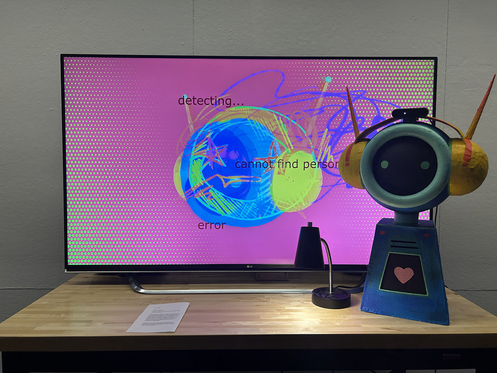
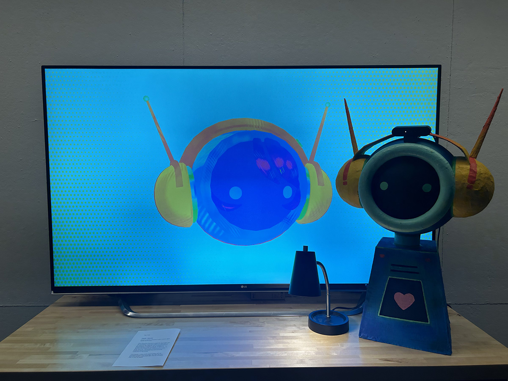
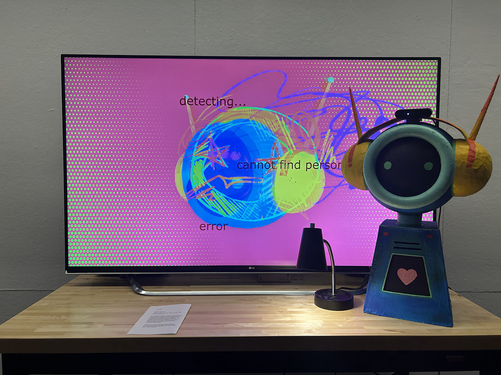
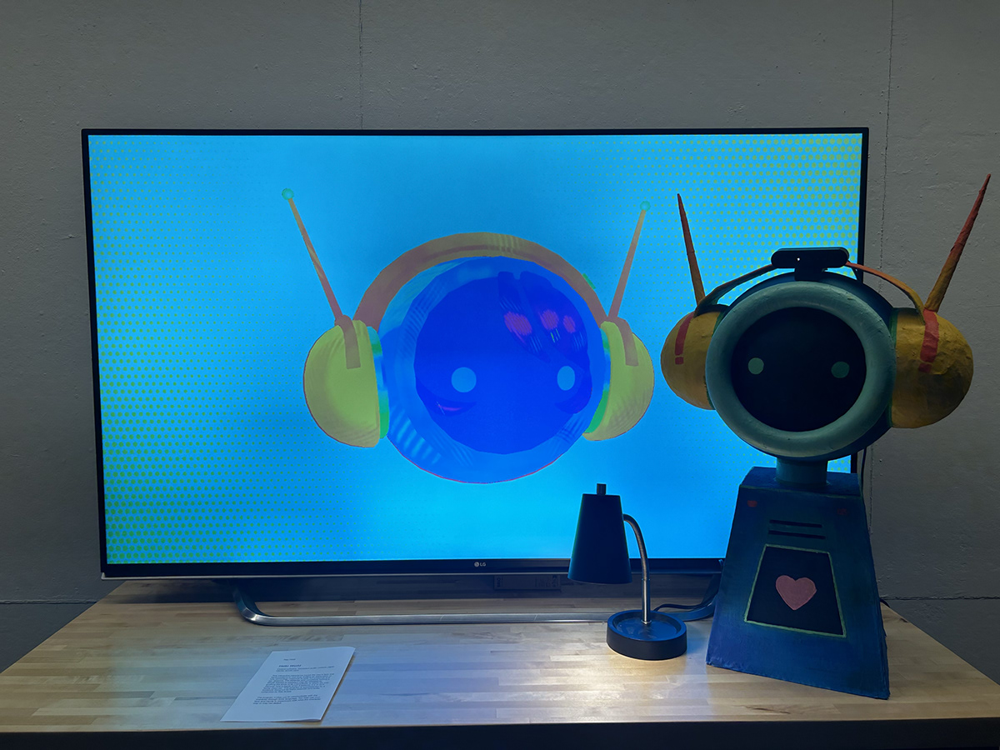

As we've trained modern technology to act a certain way and develop more user-friendly personas, we slowly begin to create characters for our machines. They are programmed to provide positive feedback, provide us with our needs, and sit still for their next command. However, we must ask, how does technology behave when we aren't looking? Are their obedient personalities the extent of their existence, or do they have more inside of them that they may not let the average user notice? The juxtaposition between a camouflaged AI assistant robot both with and without a relationship with the user is explored in Hello World. This program offers simple directions for the actions of the character, but we may only discover how it truly reacts by experimenting with how we interact with it and pushing its limits.
 



Displayed in the Bloomington Cook Center Gallery November 2025 - March 2026 for the Mimicry and Mirage Exhibition, which:
"Explores the interplay between visibility and concealment, adaptation and deception, through the lens of extended reality. Drawing inspiration from camouflage in the natural world, the exhibition showcases digital artworks that challenge perceptions and invite viewers to question what is seen, hidden, or imagined. These works investigate the concept of camouflage not only as a biological phenomenon but as a metaphor for navigating identity, space, and algorithmic landscapes in an increasingly mediated world."